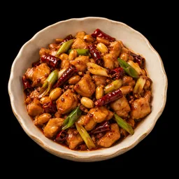
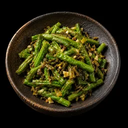

From the wok 热菜
-

Mapo Tofu
€14Silky tofu and minced pork with doubanjiang and Sichuan pepper.
Spicy -

Kung Pao Chicken
€16Wok-tossed chicken, toasted peanuts, scallions, and dried chilies.
Spicy -

Dry-Fried Green Beans
€11Blistered green beans with garlic and Sichuan preserved mustard greens.
Vegetarian